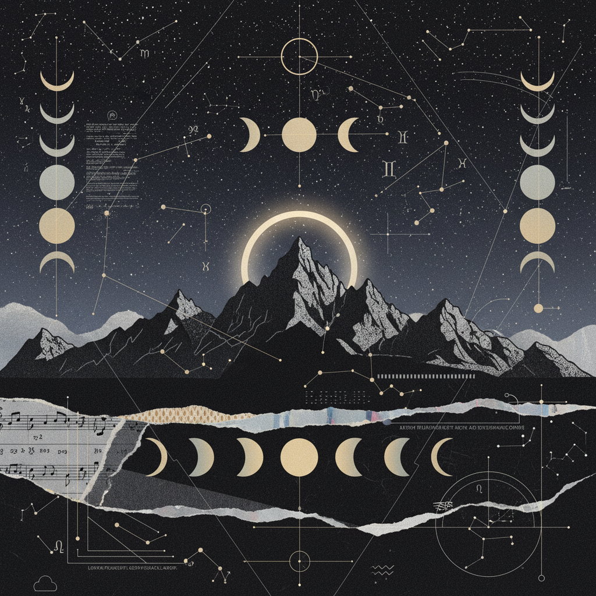

Pisces–Virgo
Eclipse Portal
ARCHIVAL METADATA

ARCHETYPAL JOURNEY
"Spiritual insight grounding itself into humble, rhythmic service."
CORRESPONDENCE A
Feet & Etheric Body
CORRESPONDENCE B
Digestive System
The bridge between the infinite and the infinitesimal.
14-Day Protocol
A systematic integration of high-vibration data into cellular reality.
The Pisces Purge
Active rest protocols. Eliminating sensory input to allow the subconscious reservoir to drain. Focus on hydrotherapy and silent meditation.
Somatic Research Prompts
Walk in varying terrains (sand, grass, stone). Observe where the body resists the weight of gravity. Record the transition from 'feeling' to 'analysing'.
Virgo Systematization
The introduction of micro-rituals. Cleaning the physical space as an act of prayer. Cataloging insights into actionable daily habits.

"That which is perceived in the depths must be articulated in the daylight."
PISCES
THE VOID
VIRGO
THE VESSEL